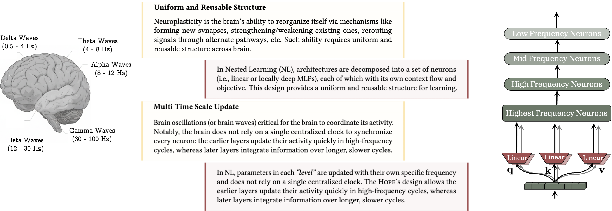
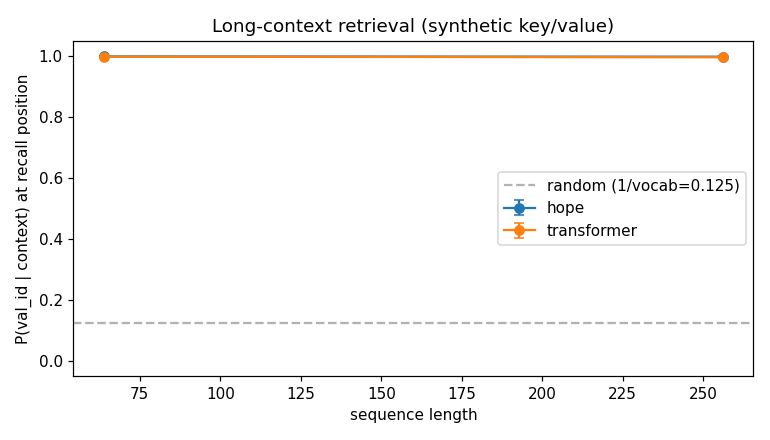
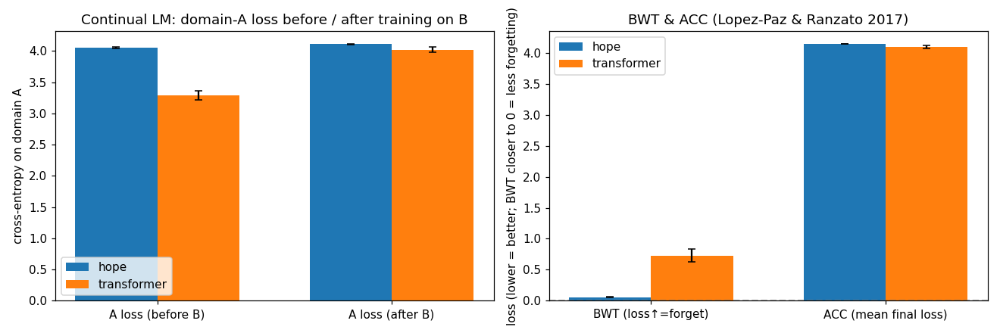
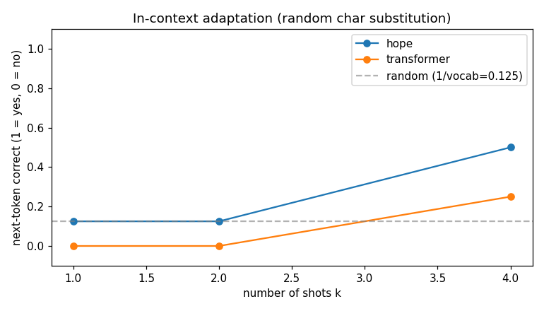

제 1 장 · 서문
현재만을 사는 모델
오늘날의 거대 언어 모델에는 이상한 결핍이 하나 있습니다. 엄청나게 많은 것을 알지만, 새로운 것을 배우지는 못한다는 점입니다.
사람의 뇌에는 전향성 기억상실(anterograde amnesia)이라는 증상이 있습니다. 사고나 질병으로 해마가 손상된 사람은, 과거의 기억은 멀쩡히 간직한 채로 새로운 장기 기억을 더 이상 만들지 못합니다. 어제 만난 사람을 오늘 처음 보는 사람처럼 대하고, 매 순간을 영원히 처음인 것처럼 살아갑니다. Nested Learning 논문의 저자들은 오늘날의 언어 모델이 정확히 이 상태에 놓여 있다고 말합니다.
언어 모델의 지식은 두 군데에만 있습니다. 하나는 사전학습이 끝나는 순간 얼어붙어 버린 가중치 안의 먼 과거이고, 다른 하나는 지금 이 순간 문맥 창(context window)에 들어와 있는 짧은 현재입니다. 그 사이는 없습니다. 대화를 아무리 길게 나누어도, 그 대화가 모델의 장기 기억으로 옮겨가는 일은 일어나지 않습니다. 문맥 창을 벗어나는 순간 모든 것은 사라지고, 모델은 다시 백지에서 시작합니다.
그런데 사람의 뇌는 그렇지 않습니다. 우리는 평생에 걸쳐 새로운 것을 배우고, 그러면서도 어릴 적 기억을 잃지 않습니다. 신경과학은 이 능력을 두 가지 열쇠로 설명합니다. 첫째는 다중 시간 척도(multi–time-scale)입니다. 뇌의 신경 진동(brainwave)은 빠른 감마파부터 느린 델타파까지 서로 다른 주파수로 작동하며, 빠른 리듬은 감각을, 느린 리듬은 기억을 굳히는 일을 담당합니다. 둘째는 균일하고 재사용 가능한 구조입니다. 뇌의 한쪽 반구를 제거해도 남은 절반이 그 기능을 떠맡을 만큼, 뇌의 구성 요소들은 한 가지 역할에 못 박혀 있지 않습니다.
이 안내서가 다루는 HOPE는 바로 이 두 가지 직관을 신경망 설계로 옮긴 결과물입니다. 그리고 그 밑바탕에는 Nested Learning이라는, 어쩌면 더 근본적인 주장이 깔려 있습니다. 우리가 서로 다른 부품이라고 믿어 온 것들, 즉 옵티마이저와 어텐션과 MLP가 사실은 업데이트 주파수가 다를 뿐인 같은 종류의 기억이라는 주장입니다.
이 문서는 HOPE-tensorflow 저장소를 위한 학습 자료입니다. 저장소에는 작동하는 구현 코드가 있지만 이론적 배경 설명이 부족합니다. 그래서 이 글은 논문의 핵심 개념을, 실제로 동작하는 그 코드와 한 줄씩 맞춰 가며 설명합니다. 수식이 나오면 반드시 그 수식이 코드의 어느 줄이 되는지를 보여 드립니다.
읽는 순서는 논문의 논리를 그대로 따릅니다. 가장 작은 벽돌인 연상 기억에서 시작해, 그 벽돌로 옵티마이저를 다시 보고, 학습 규칙 세 가지를 손에 익힌 다음, 그것들을 쌓아 자기수정 층과 연속체 기억 시스템을 만들고, 마지막에 둘을 합쳐 HOPE를 조립합니다. 천천히, 책을 읽듯 따라오시면 됩니다.
Chapter 1 · Prologue
A model that only lives in the present
Today's large language models have a strange deficiency. They know an enormous amount, yet they cannot learn anything new.
There is a neurological condition called anterograde amnesia. When the hippocampus is damaged by injury or disease, a person keeps every memory formed before the onset intact, but can no longer create new long-term memories. They greet someone met yesterday as a stranger; every moment arrives as if it were the first. The authors of Nested Learning argue that today's language models live in exactly this state.
A language model's knowledge sits in only two places. One is the distant past, frozen into its weights the instant pre-training ends. The other is the brief present currently sitting inside its context window. There is nothing in between. However long a conversation runs, that conversation never migrates into the model's long-term memory. The moment it scrolls out of the context window, it is gone, and the model begins again from a blank slate.
The human brain does not work this way. We learn new things across an entire lifetime without erasing our childhood. Neuroscience explains this with two keys. The first is multi–time-scale processing: the brain's oscillations run at different frequencies, from fast gamma waves to slow delta waves, with the fast rhythms handling sensation and the slow ones handling the consolidation of memory. The second is a uniform, reusable structure: remove one hemisphere and the other can take over its job, because the brain's components are not nailed to a single function.
The HOPE architecture in this guide is the result of porting both intuitions into a neural network. Beneath it lies a deeper claim, the one called Nested Learning: the things we have always treated as different parts — optimizers, attention, MLPs — are in fact the same kind of memory, running at different update frequencies.
This document is a study companion for the HOPE-tensorflow repository. The repo ships working code but is thin on theory. So this guide explains the paper's core ideas line-by-line against the code that actually runs. Whenever an equation appears, we show you which line of code it becomes.
We follow the paper's own logic. We start from the smallest brick — associative memory — then re-read optimizers through it, get three learning rules into our hands, stack them into a self-modifying layer and a continuum memory system, and finally combine the two into HOPE. Take it slowly, the way you would read a book.
제 2 장 · 큰 그림
중첩 학습이라는 렌즈
신경망을 훈련한다는 것은 하나의 거대한 최적화처럼 보입니다. 그러나 가까이 들여다보면, 그것은 여러 개의 최적화가 서로의 안에 포개져 돌아가는 시스템입니다.
우리는 모델을 "층을 쌓는다"는 공간적인 비유로 이해하는 데 익숙합니다. 입력이 1번 층, 2번 층, 3번 층을 지나며 점점 추상적인 특징으로 변해 간다는 그림입니다. Nested Learning은 여기에 직각으로 교차하는 두 번째 축을 더합니다. 바로 시간, 더 정확히는 업데이트 빈도의 축입니다.
이렇게 생각해 봅시다. 모델 안의 모든 요소는 저마다 "자기 문맥(context flow)"을 가지고 있고, 그 문맥을 자기 파라미터 안으로 압축하려고 끊임없이 최적화를 수행합니다. 다만 그 최적화가 얼마나 자주 일어나는지가 요소마다 다를 뿐입니다. 사전학습에서 갱신되는 바깥쪽 가중치는 가장 느린 최적화입니다. 한 문장을 처리하는 동안 매 토큰마다 갱신되는 어텐션 상태는 가장 빠른 최적화입니다. 그 둘은 종류가 다른 것이 아니라, 주파수가 다른 같은 과정입니다.
모델의 모든 부품은 자기만의 문맥을 압축하는 연상 기억이며, 학습 알고리즘과 신경망 구조는 본질적으로 같은 것이 서로 다른 수준(level)과 빈도로 작동하는 것이다. — 이것이 중첩 학습의 한 줄 요약입니다.
이 관점이 왜 강력할까요? 트랜스포머를 예로 들면, 어텐션 블록과 MLP 블록은 전혀 다른 부품처럼 보입니다. 그러나 중첩 학습의 눈으로 보면, 어텐션은 업데이트 빈도가 무한대인 기억(매 토큰마다 모든 과거를 다시 본다)이고, MLP는 업데이트 빈도가 0인 기억(사전학습 후 절대 변하지 않는다)입니다. 두 극단 사이의 모든 중간 주파수는 — 사람의 뇌에는 가득한 그 스펙트럼은 — 표준 트랜스포머에는 통째로 비어 있습니다. HOPE가 채우려는 것이 바로 이 빈 스펙트럼입니다.
그리고 한 걸음 더 나아갑니다. 만약 학습 규칙 자체가 또 하나의 최적화 문제라면, 모델은 자신의 학습 규칙을 학습할 수도 있습니다. 안쪽 수준이 바깥쪽 수준의 학습 방식을 결정하고, 그 바깥쪽이 다시 더 바깥쪽의 영향을 받는 — 이 포개진 구조에서 "맥락 속 학습(in-context learning)"이라는 능력이 자연히 솟아납니다. 수준이 많아질수록, 모델은 더 고차원의 맥락 속 학습을 하게 됩니다.

이제 큰 그림은 충분합니다. 이 모든 주장이 실제로 성립하려면, 먼저 "모든 부품이 연상 기억이다"라는 말이 무슨 뜻인지부터 또렷하게 정의해야 합니다. 다음 장에서 그 벽돌 하나를 손에 쥐어 보겠습니다.
Chapter 2 · The big picture
Nested Learning as a lens
Training a network looks like one giant optimization. Look closer and it is many optimizations, nested one inside another.
We are used to a spatial metaphor: a model "stacks layers," and an input becomes more abstract as it passes through layer one, two, three. Nested Learning adds a second axis at right angles to that one — the axis of time, or more precisely, of update frequency.
Think of it this way. Every element inside the model carries its own "context flow," and it is perpetually optimizing to compress that context into its own parameters. The only thing that differs between elements is how often that optimization happens. The outer weights, updated during pre-training, are the slowest optimization. The attention state, updated at every token while processing a single sentence, is the fastest. They are not different in kind — they are the same process at different frequencies.
Every part of a model is an associative memory compressing its own context; the learning algorithm and the architecture are fundamentally the same thing operating at different levels and frequencies. That is Nested Learning in a single line.
Why is this powerful? Take a Transformer. Its attention block and its MLP block look like entirely different parts. But through the Nested Learning lens, attention is a memory with infinite update frequency (it re-reads all of the past at every token), and the MLP is a memory with zero update frequency (it never changes after pre-training). Every intermediate frequency between those two extremes — the whole spectrum that fills the human brain — is simply missing from a standard Transformer. Filling that empty spectrum is exactly what HOPE sets out to do.
Then it goes one step further. If a learning rule is itself an optimization problem, a model can learn its own learning rule. An inner level decides how an outer level updates, and that outer level is in turn shaped by one further out. From this nesting, the ability we call "in-context learning" emerges naturally — and the more levels there are, the higher-order that in-context learning becomes.
That is enough of the big picture. For any of this to hold, we first need a crisp definition of what "every part is an associative memory" actually means. In the next chapter we pick up that single brick and turn it over in our hands.
제 3 장 · 벽돌 하나
연상 기억
연상 기억이란, 열쇠(key)를 주면 값(value)을 돌려주는 장치입니다. 이름과 얼굴, 냄새와 추억처럼, 한 사건을 다른 사건과 이어 두었다가 한쪽을 단서로 다른 쪽을 불러내는 것 — 그것이 전부입니다.
논문은 이것을 정의 1에서 형식적으로 못 박습니다. 열쇠들의 집합 $\mathcal{K}$와 값들의 집합 $\mathcal{V}$가 주어졌을 때, 연상 기억은 $\mathcal{K}$를 $\mathcal{V}$로 보내는 연산자 $M(\cdot)$입니다. 좋은 연산자란 매핑의 품질을 재는 목적함수 $\tilde{L}$을 최소로 만드는 것입니다.
이 정의가 무서울 정도로 일반적이라는 점에 주목하십시오. 열쇠와 값이 무엇인지는 정해져 있지 않습니다. 토큰일 수도, 그래디언트일 수도, 부분 수열일 수도 있습니다. 바로 이 일반성 덕분에 논문은 "옵티마이저도, 어텐션도, MLP도 전부 연상 기억"이라고 말할 수 있는 것입니다. 무엇을 열쇠로 보고 무엇을 값으로 보느냐만 바꾸면 됩니다.
가장 단순한 구현은 기억을 하나의 행렬 $M$으로 두는 것입니다. 열쇠 벡터 $k$를 넣으면 값은 행렬-벡터 곱 $Mk$로 꺼냅니다. 이것이 회상(retrieval)입니다. 그리고 새로운 $(k, v)$ 쌍을 기억에 새겨 넣는 것이 쓰기(write)입니다. 저장소의 AssociativeMemory 클래스가 정확히 이 그림입니다 — 상태는 모양이 $(\text{value\_dim}, \text{key\_dim})$인 행렬 하나뿐입니다.
class AssociativeMemory(tf.Module):
def __init__(self, key_dim, value_dim, rule="hebbian", learning_rate=1.0, ...):
# 기억은 단 하나의 행렬. 학습되는 파라미터가 아니라, 순전파 도중 갱신되는 상태.
self.memory = tf.Variable(
tf.zeros((value_dim, key_dim)), trainable=False, name="memory")
def retrieve(self, k):
# 회상: 값 = M k
return tf.einsum("vk,...k->...v", self.memory, k)
def write(self, k, v):
# 쓰기: 규칙에 따라 M 을 갱신 (다음 장에서 자세히)
...hope/memory.py — 회상은 한 줄의 행렬곱, 쓰기는 학습 규칙에 따른 한 번의 갱신. 이 작은 클래스가 이 글의 나머지 모든 것의 토대입니다.
식 (6)의 추상적인 연산자 $M(\cdot)$가, 코드에서는 tf.Variable 하나로 사는 행렬 self.memory가 됩니다. "$M(\mathcal{K})$를 계산한다"는 것은 retrieve()이고, "$\tilde{L}$을 줄이도록 $M$을 갱신한다"는 것은 write()입니다.
여기서 한 가지 용어를 분명히 하고 넘어가겠습니다. 논문은 신경과학을 따라 기억(memory)과 학습(learning)을 구별합니다. 기억은 입력이 일으킨 신경의 변화 그 자체이고, 학습은 그런 변화를 효과적으로 일으키는 좋은 규칙을 얻는 과정입니다. 우리 코드로 말하면, write 한 번이 일으키는 행렬의 변화가 "기억"이고, 어떤 write 규칙을 쓸지를 고르고 다듬는 것이 "학습"입니다.
그렇다면 "어떤 write 규칙을 쓸지"가 다음 질문이 됩니다. 그런데 그 질문에 답하기 전에, 잠깐 의외의 곳에 들러야 합니다. 신경망을 훈련하는 옵티마이저 — Adam이나 모멘텀 SGD — 그것 자체가 이미 하나의 연상 기억이라는 사실을 보고 나면, write 규칙들이 훨씬 자연스럽게 손에 잡힐 것이기 때문입니다.
Chapter 3 · A single brick
Associative memory
An associative memory is a device that, given a key, returns a value. A name and a face, a smell and a memory — you bind one event to another, then use one as a cue to recall the other. That is all it is.
The paper pins this down in Definition 1. Given a set of keys $\mathcal{K}$ and a set of values $\mathcal{V}$, an associative memory is an operator $M(\cdot)$ that maps $\mathcal{K}$ to $\mathcal{V}$. A good operator is one that minimizes an objective $\tilde{L}$ measuring the quality of the mapping.
Notice how frighteningly general this definition is. It never says what the keys and values are. They could be tokens, gradients, or sub-sequences. It is precisely this generality that lets the paper claim that optimizers, attention, and MLPs are all associative memories — you only change what you call the key and what you call the value.
The simplest implementation keeps the memory as a single matrix $M$. Feed in a key vector $k$ and you read the value out as the matrix–vector product $Mk$. That is retrieval. Writing a new $(k, v)$ pair into the memory is a write. The repo's AssociativeMemory class is exactly this picture — its entire state is one matrix of shape $(\text{value\_dim}, \text{key\_dim})$.
class AssociativeMemory(tf.Module):
def __init__(self, key_dim, value_dim, rule="hebbian", learning_rate=1.0, ...):
# The memory is one matrix. Not a trained parameter — a state updated during the forward pass.
self.memory = tf.Variable(
tf.zeros((value_dim, key_dim)), trainable=False, name="memory")
def retrieve(self, k):
# Retrieval: value = M k
return tf.einsum("vk,...k->...v", self.memory, k)
def write(self, k, v):
# Write: update M according to a rule (detailed next chapter)
...hope/memory.py — retrieval is a single matrix product, a write is one rule-driven update. This tiny class is the foundation of everything that follows.
The abstract operator $M(\cdot)$ of Eq. (6) becomes, in code, the matrix self.memory living inside a single tf.Variable. "Compute $M(\mathcal{K})$" is retrieve(); "update $M$ to reduce $\tilde{L}$" is write().
Let us fix one piece of terminology. Following neuropsychology, the paper distinguishes memory from learning. Memory is the neural change an input causes; learning is the process of acquiring a good rule that causes such changes effectively. In our code: the change one write makes to the matrix is "memory," and choosing and refining which write rule to use is "learning."
So "which write rule?" becomes the next question. But before answering it, we must make a surprising detour. Once you see that the optimizer that trains a network — Adam, momentum SGD — is itself already an associative memory, the write rules will sit much more naturally in your hands.
제 4 장 · 의외의 등가
옵티마이저도 기억이다
역전파로 선형 층 하나를 훈련하는 일은, 알고 보면 "입력을 그 예측의 오차에 매핑하는 연상 기억"을 학습하는 일과 정확히 같습니다.
선형 층 $W$를 경사하강법으로 훈련한다고 합시다. 가중치 갱신은 다음과 같이 쓸 수 있습니다. 핵심은 그래디언트가 두 조각의 외적(outer product)으로 분해된다는 점입니다 — 하나는 출력에 대한 국소 오차 신호이고, 다른 하나는 입력 그 자체입니다.
이 식을 연상 기억의 눈으로 다시 읽어 봅시다. 입력 $x_{t+1}$을 열쇠로, 출력의 국소 오차 신호(논문은 이를 "놀라움", surprise라고 부릅니다)를 값으로 두면, 역전파란 결국 "각 데이터 샘플을 그것이 일으킨 예측 오차에 매핑하는 기억"을 만드는 과정입니다. 모델은 자신의 예측이 얼마나 놀라웠는지를 기억함으로써 배웁니다.
놀라움 = 그래디언트입니다. 예측이 정확하면 그래디언트가 0에 가깝고("놀랍지 않음"), 그러면 기억은 거의 바뀌지 않습니다. 예측이 크게 빗나가면 그래디언트가 크고("매우 놀라움"), 기억은 그만큼 크게 갱신됩니다. 학습이란 놀라움을 압축하는 일입니다.
여기에 모멘텀을 더하면 이야기가 한 층 더 깊어집니다. 모멘텀 버퍼 $m$은 과거 그래디언트를 차곡차곡 쌓아 둔 것인데, 이 버퍼 자체가 "과거의 그래디언트들을 자기 안으로 압축하는 또 하나의 연상 기억"입니다. 그래서 모멘텀 경사하강법은 2-수준(2-level) 중첩 최적화가 됩니다. 안쪽 수준은 그래디언트를 모멘텀 버퍼에 저장하고, 바깥쪽 수준은 그 버퍼의 내용으로 느린 가중치 $W$를 갱신합니다. 기억 안에 기억이 들어 있는 것입니다.
저장소의 optimizers.py는 이 관점을 그대로 코드로 옮겨 둔 학습용 구현입니다. DeepOptimizer는 변수마다 모멘텀 버퍼를 명시적으로 하나씩 들고 다니는데, 그 "깊다(deep)"는 이름이 바로 모멘텀을 중첩된 연상 기억으로 보는 논문의 시선에서 왔습니다.
class DeepOptimizer:
# 모멘텀 버퍼를 "그래디언트를 압축하는 안쪽 기억"으로 본다 (논문 §4.2, 식 33–34)
def apply_gradients(self, grads_and_vars):
for g, v in grads_and_vars:
m = self._momentums[id(v)]
new_m = self.beta * m + g # 안쪽 기억: 과거 그래디언트를 압축
m.assign(new_m)
v.assign_sub(self.lr * (new_m + self.decay * v)) # 바깥쪽: 느린 가중치 갱신hope/optimizers.py — DGD와 DeepOptimizer는 논문의 옵티마이저=기억 관점을 보여 주는 참고용 구현입니다. (실제 학습 루프는 Adam을 씁니다 — 11장 참고.)
논문은 여기서 한 걸음 더 나갑니다. 그래디언트를 압축하기에 좋은 옵티마이저와, 토큰을 압축하기에 좋은 옵티마이저가 꼭 같으리란 법이 없다는 것입니다. 토큰은 서로 강하게 상관되어 있어서, i.i.d. 가정을 하는 단순 경사하강법으로는 그 의존성을 놓칩니다. 그래서 저자들은 델타 경사하강법(DGD)을 제안합니다 — 갱신이 현재 입력뿐 아니라 현재 가중치의 상태에도 의존하게 만들어, 데이터 샘플 사이의 의존성을 포착하는 변형입니다.
이제 우리는 두 개의 연장을 손에 쥐었습니다. 하나는 "기억을 행렬로 둔다"는 구조이고, 다른 하나는 "갱신은 곧 압축이며, 놀라움(오차)을 줄이는 방향이다"라는 원리입니다. 이 둘을 합치면, 기억에 무언가를 새겨 넣는 구체적인 방법 — 학습 규칙 — 들이 자연스럽게 모습을 드러냅니다.
Chapter 4 · A surprising equivalence
Optimizers are memory too
Training a single linear layer with backprop turns out to be exactly the same as learning "an associative memory that maps inputs to the error of their predictions."
Suppose we train a linear layer $W$ with gradient descent. The weight update can be written as below. The key is that the gradient factors into an outer product of two pieces — a local error signal on the output, and the input itself.
Re-read this with the associative-memory eye. Let the input $x_{t+1}$ be the key and the output's local error signal (the paper calls it "surprise") be the value. Then backprop is the process of building "a memory that maps each data sample to the prediction error it caused." The model learns by remembering how surprising its own predictions were.
Surprise = gradient. When a prediction is accurate the gradient is near zero ("not surprising"), so the memory barely changes. When a prediction is far off the gradient is large ("very surprising"), and the memory updates correspondingly. Learning is the compression of surprise.
Add momentum and the story deepens by one level. The momentum buffer $m$ accumulates past gradients — and that buffer is itself "another associative memory compressing the past gradients into itself." So momentum gradient descent becomes a two-level nested optimization. The inner level stores gradients in the momentum buffer; the outer level updates the slow weight $W$ from that buffer's contents. A memory inside a memory.
The repo's optimizers.py ports this view directly into study code. DeepOptimizer carries an explicit momentum buffer per variable, and that word "deep" comes precisely from the paper's reading of momentum as a nested associative memory.
class DeepOptimizer:
# The momentum buffer is the "inner memory that compresses gradients" (paper §4.2, Eq. 33–34)
def apply_gradients(self, grads_and_vars):
for g, v in grads_and_vars:
m = self._momentums[id(v)]
new_m = self.beta * m + g # inner memory: compress past gradients
m.assign(new_m)
v.assign_sub(self.lr * (new_m + self.decay * v)) # outer: update the slow weighthope/optimizers.py — DGD and DeepOptimizer are reference implementations of the optimizer-as-memory view. (The real training loop uses Adam — see Chapter 11.)
The paper pushes once more. The optimizer that is good at compressing gradients need not be the one that is good at compressing tokens. Tokens are strongly correlated, so a plain gradient descent that assumes i.i.d. data misses their dependencies. So the authors propose Delta Gradient Descent (DGD) — a variant whose update depends not only on the current input but also on the current state of the weight, capturing dependencies between samples.
We now hold two handles. One is the structure: "keep the memory as a matrix." The other is the principle: "an update is compression, in the direction that reduces surprise (error)." Put them together and the concrete recipes for writing into a memory — the learning rules — appear of their own accord.
제 5 장 · 손에 익히기
세 가지 학습 규칙
기억 행렬 $M$에 $(k, v)$ 쌍을 새겨 넣는 방법은 한 가지가 아닙니다. 저장소는 Hebbian, Delta, Oja 세 가지를 구현해 두었고, 셋은 점점 더 영리해집니다.
① Hebbian — "함께 발화하는 것은 함께 묶인다"
가장 오래되고 단순한 규칙입니다. 값과 열쇠의 외적을 그냥 기억에 더합니다. 선형 어텐션의 그 유명한 갱신식(식 18)이 바로 이것입니다.
장점은 단순함과 속도입니다. 단점은 용량이 작다는 것 — 비슷한 열쇠들이 자꾸 들어오면 간섭이 쌓이고, 오래된 기억과 새 기억이 뒤엉킵니다.
② Delta — "틀린 만큼만 고친다"
회귀 목적함수 $\lVert Mk - v \rVert^2$의 그래디언트를 따라가는 규칙입니다. 먼저 현재 기억으로 $k$를 회상해 보고($Mk$), 그것이 원하는 값 $v$와 얼마나 다른지(오차)를 본 다음, 그 오차를 줄이는 방향으로만 기억을 고칩니다. 이미 잘 기억하고 있는 것은 건드리지 않습니다.
③ Oja — "고치되, 폭주하지 않게"
Delta 규칙에 기억의 크기를 억제하는 감쇠 항 $kk^{\top}M$을 더한 것입니다(식 88에서 $\alpha=1$인 경우). 이 항은 기억의 노름이 무한정 커지는 것을 막아 줍니다. 다만 열쇠의 크기가 매우 클 때는 한 걸음이 과하게 커져 발산할 수 있어서, 저장소는 이 경계를 test_oja_handles_large_norm_keys라는 회귀 테스트로 명시적으로 못 박아 두었습니다.
세 규칙은 모두 AssociativeMemory.write 하나 안에 들어 있습니다. 코드를 보면 수식이 그대로 한 줄씩 대응되는 것을 확인할 수 있습니다.
def write(self, k, v):
outer_vk = tf.einsum("v,k->vk", v, k) # v k^T
if self.rule == "hebbian":
delta = self.learning_rate * outer_vk # 식 18: M += η v k^T
else:
pred = tf.linalg.matvec(self.memory, k) # M k (현재 회상)
err = pred - v # (M k - v) 오차
err_outer = tf.einsum("v,k->vk", err, k) # (M k - v) k^T
if self.rule == "delta":
delta = -self.learning_rate * err_outer # 식 93의 그래디언트
else: # oja
kk = tf.einsum("a,b->ab", k, k) # k k^T
decay = tf.matmul(self.memory, kk) # M (k k^T) 감쇠 항
delta = -self.learning_rate * err_outer - self.learning_rate * decay # 식 88
self.memory.assign_add(delta)
return self.memoryhope/memory.py — 세 갈래의 if가 곧 세 개의 수식입니다. Hebbian은 오차를 보지 않고, Delta는 오차를 보고, Oja는 오차에 더해 감쇠까지 봅니다.
Hebbian: 빠르지만 거칠다. Delta: 틀린 만큼만 똑똑하게 고친다. Oja: 똑똑하게 고치면서 기억이 폭주하지 않게 고삐를 쥔다. 뒤에서 HOPE 모델은 속도가 중요한 자리에 Hebbian을 씁니다.
이제 우리는 기억을 갖고 있고, 그 기억에 쓰는 법도 셋이나 압니다. 다음 질문은 이것입니다 — 만약 어떤 신경망 층이, 한 문장을 처리하는 도중에, 매 토큰마다 자기 자신에게 이 write를 수행한다면 어떻게 될까요?
Chapter 5 · Getting them in hand
Three learning rules
There is more than one way to write a $(k, v)$ pair into a memory matrix $M$. The repo implements three — Hebbian, Delta, Oja — and they grow progressively smarter.
① Hebbian — "what fires together, wires together"
The oldest and simplest rule. Just add the outer product of value and key to the memory. This is the famous linear-attention update (Eq. 18).
Its virtue is simplicity and speed. Its vice is small capacity — feed it similar keys repeatedly and interference accumulates, old and new memories tangling together.
② Delta — "fix only what's wrong"
This rule follows the gradient of the regression objective $\lVert Mk - v \rVert^2$. First it recalls $k$ from the current memory ($Mk$), sees how far that is from the desired value $v$ (the error), then corrects the memory only in the direction that reduces that error. What it already remembers well, it leaves alone.
③ Oja — "fix it, but don't let it blow up"
This is the Delta rule plus a decay term $kk^{\top}M$ that reins in the size of the memory (the $\alpha=1$ case of Eq. 88). The term keeps the memory norm from growing without bound. When keys have very large norm, though, a single step can overshoot and diverge — so the repo pins that boundary explicitly with a regression test, test_oja_handles_large_norm_keys.
All three rules live inside a single method, AssociativeMemory.write. In the code the equations map onto lines one for one.
def write(self, k, v):
outer_vk = tf.einsum("v,k->vk", v, k) # v k^T
if self.rule == "hebbian":
delta = self.learning_rate * outer_vk # Eq. 18: M += η v k^T
else:
pred = tf.linalg.matvec(self.memory, k) # M k (current recall)
err = pred - v # (M k - v) the error
err_outer = tf.einsum("v,k->vk", err, k) # (M k - v) k^T
if self.rule == "delta":
delta = -self.learning_rate * err_outer # gradient of Eq. 93
else: # oja
kk = tf.einsum("a,b->ab", k, k) # k k^T
decay = tf.matmul(self.memory, kk) # M (k k^T) decay term
delta = -self.learning_rate * err_outer - self.learning_rate * decay # Eq. 88
self.memory.assign_add(delta)
return self.memoryhope/memory.py — the three-way if is three equations. Hebbian never looks at the error, Delta looks at the error, Oja looks at the error plus a decay.
Hebbian: fast but coarse. Delta: smartly corrects only what's wrong. Oja: corrects smartly while holding the reins so the memory can't blow up. Later, the HOPE model uses Hebbian where speed matters.
We now have a memory, and three ways to write into it. The next question: what happens if a neural layer performs this write on itself, at every token, while it is processing a single sentence?
제 6 장 · 처리하며 변하는 층
스스로를 고쳐 쓰는 층
보통의 신경망 층은 훈련이 끝나면 가중치가 얼어붙습니다. 자기수정 층은 다릅니다 — 한 문장을 읽는 동안, 읽으면서 자기 자신을 바꿉니다.
트랜스포머의 근본적 한계는 입력을 키·값·쿼리로 사영하는 가중치 $W_k, W_v, W_q$가 사전학습 후 고정된다는 데 있습니다. 단어의 의미가 문맥에 따라 달라져도, 그 사영은 늘 같은 방식으로 작동합니다. 논문은 묻습니다. 모델이 문맥을 보고 자기 자신을 고칠 수는 없을까?
저장소의 SelfModifyingLayer는 이 아이디어의 최소판입니다. 느린 가중치 $W_k, W_v, W_q$는 보통의 학습되는 파라미터로 두되, 그 위에 빠른 가중치(fast weight) $W_{\text{fast}}$를 하나 더 얹습니다. 이 빠른 가중치는 학습되는 파라미터가 아니며, 순전파가 시작될 때 0으로 초기화되었다가, 토큰을 하나씩 처리할 때마다 Hebbian 규칙으로 갱신됩니다.
한 토큰 $x_t$가 들어오면, 먼저 느린 가중치로 $k_t, v_t, q_t$를 만듭니다. 그런 다음 지금까지 쌓인 빠른 가중치로 $q_t$를 회상해 출력 $y_t$를 내고, 곧바로 $v_t k_t^{\top}$를 빠른 가중치에 새겨 넣습니다. $\alpha$는 망각 게이트입니다 — 1보다 약간 작게 두어, 오래된 기억이 서서히 흐려지게 합니다. 이렇게 층은 문장을 읽어 나가며 자신의 연산자를 계속 다시 씁니다.
def step(t, fast_state, ta):
k_t = k[:, t, :]; v_t = v[:, t, :]; q_t = q[:, t, :]
y_t = tf.einsum("buv,bv->bu", fast_state, q_t) # 회상: y = W_fast q (식 78)
outer = tf.einsum("bv,bk->bvk", v_t, k_t) # v k^T
new_fast = self.alpha * fast_state + self.eta * outer # Hebbian 갱신 (식 18)
ta = ta.write(t, y_t)
return t + 1, new_fast, ta
# 매 순전파마다 fast0 = zeros 로 시작 → 층이 "한 문장 안에서" 스스로를 수정
_, final_fast, outputs_ta = tf.while_loop(cond, step, (tf.constant(0), fast0, outputs_ta))hope/layers.py — tf.while_loop이 토큰을 순차적으로 훑으며 빠른 가중치를 굴립니다. 빠른 가중치는 순전파가 끝나면 사라지므로, 매 문장은 백지에서 다시 시작합니다.
이 구현은 논문 §8.1의 완전한 자기참조 Titans(식 94–97)가 아니라, 그 핵심 직관을 담은 선형 어텐션 규모의 최소판입니다. 논문의 완전판은 $W_k, W_v, W_q$ 각각을 또 하나의 적응형 기억으로 만들고, 모델이 자기 값을 스스로 생성하게 합니다. 여기서는 빠른 가중치 하나로 그 정신을 보여 줍니다. (자세한 경계는 11장에서.)
이 층은 "빠른" 쪽 끝을 담당합니다. 한 문장 안에서 매 토큰마다 변하니, 업데이트 빈도가 매우 높습니다. 그런데 2장에서 우리는 뇌가 빠른 리듬과 느린 리듬을 동시에 갖는다고 했습니다. 그렇다면 느린 쪽 끝, 여러 토큰에 걸쳐 천천히 쌓이는 지속적 기억은 누가 담당할까요? 바로 다음 장의 연속체 기억 시스템입니다.
Chapter 6 · A layer that changes as it reads
The self-modifying layer
An ordinary layer freezes its weights once training ends. A self-modifying layer is different — while it reads a sentence, it rewrites itself as it goes.
A Transformer's fundamental limit is that the projections $W_k, W_v, W_q$ that map input to keys, values, and queries are fixed after pre-training. Even when a word's meaning shifts with context, those projections always operate the same way. The paper asks: could a model look at the context and modify itself?
The repo's SelfModifyingLayer is the minimal version of that idea. The slow weights $W_k, W_v, W_q$ remain ordinary trained parameters, but on top of them sits a fast weight $W_{\text{fast}}$. This fast weight is not a trained parameter; it is reset to zero at the start of every forward pass and updated with the Hebbian rule as each token is processed.
When a token $x_t$ arrives, the slow weights first produce $k_t, v_t, q_t$. Then the fast weight accumulated so far recalls $q_t$ to emit the output $y_t$, and immediately $v_t k_t^{\top}$ is written into the fast weight. Here $\alpha$ is a forget gate — kept a touch below 1 so old memories fade gradually. In this way the layer keeps rewriting its own operator as it reads the sentence.
def step(t, fast_state, ta):
k_t = k[:, t, :]; v_t = v[:, t, :]; q_t = q[:, t, :]
y_t = tf.einsum("buv,bv->bu", fast_state, q_t) # retrieval: y = W_fast q (Eq. 78)
outer = tf.einsum("bv,bk->bvk", v_t, k_t) # v k^T
new_fast = self.alpha * fast_state + self.eta * outer # Hebbian update (Eq. 18)
ta = ta.write(t, y_t)
return t + 1, new_fast, ta
# Every forward pass starts at fast0 = zeros → the layer modifies itself "within one sentence"
_, final_fast, outputs_ta = tf.while_loop(cond, step, (tf.constant(0), fast0, outputs_ta))hope/layers.py — a tf.while_loop sweeps tokens in order, rolling the fast weight forward. The fast weight vanishes at the end of the pass, so every sentence begins from a blank slate.
This implementation is not the full Self-Referential Titans of paper §8.1 (Eq. 94–97) but a linear-attention-scale minimal version that captures the core intuition. The paper's full version turns each of $W_k, W_v, W_q$ into yet another adaptive memory and has the model generate its own values. Here, a single fast weight conveys the spirit. (See Chapter 11 for the exact boundaries.)
This layer owns the "fast" end of the spectrum: it changes at every token within a sentence, so its update frequency is very high. But in Chapter 2 we said the brain holds fast rhythms and slow ones at once. So who owns the slow end — the persistent memory that accumulates gradually across many tokens? That is the continuum memory system of the next chapter.
제 7 장 · 주파수의 스펙트럼
연속체 기억 시스템 (CMS)
단기 기억과 장기 기억이라는 두 칸짜리 서랍은 잊으십시오. 기억은 가장 빠른 것부터 가장 느린 것까지, 연속된 주파수의 스펙트럼입니다.
전통적인 관점은 기억을 둘로 나눕니다 — 빠르게 적응하지만 금세 사라지는 단기 기억, 그리고 천천히 쌓이는 장기 기억. CMS는 이 이분법을 거부하고, 그 사이를 여러 단계의 "뱅크(bank)"로 채웁니다. 각 뱅크는 자기만의 업데이트 빈도를 가집니다. 빠른 뱅크는 매 토큰마다 갱신되어 단기 문맥을 담고, 느린 뱅크는 여러 토큰에 한 번씩만 갱신되어 좀처럼 변하지 않는 지속적 구조를 담습니다.
이것이 2장에서 본 뇌파의 직접적 번역입니다. 빠른 감마파(감각)에서 느린 델타파(기억을 굳히는 일)까지의 스펙트럼이, 여기서는 서로 다른 갱신 주기를 가진 뱅크들의 사슬이 됩니다.
형식적으로, CMS는 MLP/기억 블록의 사슬입니다(식 70). $\ell$번째 블록의 파라미터는 $C^{(\ell)}$ 스텝마다 한 번씩만 갱신됩니다(식 71). 표준 트랜스포머의 MLP 블록은 이 형식의 특수한 경우 — 사슬의 길이가 1이고 갱신 빈도가 0인 경우 — 일 뿐입니다.
저장소의 ContinuumMemorySystem은 각 뱅크를 하나의 AssociativeMemory로 두고, 매 스텝마다 세 가지를 합니다. 먼저 각 뱅크에 곱셈형 감쇠를 적용하고(과거를 서서히 흐리게), 그다음 현재 스텝이 그 뱅크의 갱신 주기에 해당하면 토큰을 써 넣고, 마지막으로 회상한 결과를 다음 뱅크의 입력으로 넘깁니다.
def forward_step(self, token, step_index):
x = token
for b in self.banks:
if b.decay > 0: # 1) 곱셈형 감쇠: 과거를 서서히 흐리게
b.memory.memory.assign(b.memory.memory * (1.0 - b.decay))
if step_index % b.update_every == 0: # 2) 이 뱅크의 주기에 해당할 때만 쓰기
b.memory.write(x, x)
x = b.memory.retrieve(x) # 3) 회상 → 다음 뱅크의 입력
return xhope/memory.py — step_index % b.update_every == 0 이 한 줄이 식 71의 "빈도"를 그대로 구현합니다. 빈도가 곧 코드가 됩니다.
새로운 도메인을 학습하다 보면 어떤 뱅크의 지식이 덮어쓰입니다. 하지만 같은 지식이 더 느린 뱅크에는 아직 남아 있습니다. 느린 뱅크는 그만큼 천천히 변하기 때문입니다. 그래서 빠른 뱅크가 무언가를 잊어도, 느린 뱅크가 그것을 다시 되돌려 줄 수 있습니다 — 기억이 시간 축을 따라 한 바퀴 도는 셈입니다. 이것이 치명적 망각(catastrophic forgetting)에 대한 CMS의 방어입니다.
이 저장소의 CMS는 각 뱅크를 단일 외적 기억($\text{dim}\times\text{dim}$ 행렬 하나)으로 둡니다. 논문 §7.1의 완전판은 각 뱅크가 2층 MLP 사슬(식 70–71)이며, Nested·Sequential·Head-wise 같은 변형들이 있습니다. 여기서는 "다중 주파수 뱅크"라는 핵심 골격에 집중합니다.
이제 두 끝이 모두 준비됐습니다. 빠른 끝의 자기수정 층과, 느린 끝의 연속체 기억. 하지만 트랜스포머가 그토록 강한 데에는 이유가 있었습니다 — 장거리 의존성을 한 번에 잇는 소프트맥스 어텐션입니다. HOPE도 그 힘을 빌립니다.
Chapter 7 · A spectrum of frequencies
The Continuum Memory System (CMS)
Forget the two-drawer cabinet of short-term and long-term memory. Memory is a continuous spectrum of frequencies, from the fastest to the slowest.
The traditional view splits memory in two — a short-term memory that adapts fast but fades fast, and a long-term memory that accumulates slowly. CMS rejects that dichotomy and fills the space between with several "banks." Each bank has its own update frequency. Fast banks update at every token and hold short-term context; slow banks update only once every several tokens and hold persistent structure that barely changes.
This is a direct translation of the brainwaves from Chapter 2. The spectrum from fast gamma (sensation) to slow delta (memory consolidation) becomes, here, a chain of banks with different update periods.
Formally, CMS is a chain of MLP/memory blocks (Eq. 70). The parameters of the $\ell$-th block are updated only once every $C^{(\ell)}$ steps (Eq. 71). A standard Transformer's MLP block is just a special case of this form — a chain of length one with update frequency zero.
The repo's ContinuumMemorySystem keeps each bank as one AssociativeMemory and does three things per step. First it applies a multiplicative decay to each bank (gradually dimming the past); then, if the current step falls on that bank's update period, it writes the token in; finally it passes the retrieved result on as the next bank's input.
def forward_step(self, token, step_index):
x = token
for b in self.banks:
if b.decay > 0: # 1) multiplicative decay: dim the past gradually
b.memory.memory.assign(b.memory.memory * (1.0 - b.decay))
if step_index % b.update_every == 0: # 2) write only on this bank's period
b.memory.write(x, x)
x = b.memory.retrieve(x) # 3) retrieve → input to the next bank
return xhope/memory.py — the single line step_index % b.update_every == 0 implements the "frequency" of Eq. 71 directly. Frequency becomes code.
While learning a new domain, the knowledge in some bank gets overwritten. But the same knowledge still survives in a slower bank, because slower banks change that much more reluctantly. So when a fast bank forgets something, a slow bank can feed it back — memory loops around through the time axis. This is CMS's defense against catastrophic forgetting.
This repo's CMS keeps each bank as a single outer-product memory (one $\text{dim}\times\text{dim}$ matrix). The full version in paper §7.1 makes each bank a two-layer MLP chain (Eq. 70–71), with Nested / Sequential / Head-wise variants. Here we focus on the core skeleton: multi-frequency banks.
Both ends are now ready — the self-modifying layer at the fast end, the continuum memory at the slow end. But Transformers are strong for a reason: softmax attention, which links long-range dependencies in a single shot. HOPE borrows that power too.
제 8 장 · 무한 주파수의 기억
HopeAttention
중첩 학습의 눈으로 보면, 소프트맥스 어텐션은 별종이 아닙니다 — 그것은 그저 업데이트 빈도가 무한대인 연상 기억입니다.
어텐션은 매 토큰마다 모든 과거를 다시 봅니다. 과거를 압축해 파라미터에 담아 두는 것이 아니라, 전부 캐시에 들고 있다가 그때그때 비모수적으로(non-parametric) 회상합니다. 이것이 "빈도 무한대"의 의미입니다. 그래서 어텐션은 장거리 의존성을 잇는 데 강력하지만, 그 대가로 모든 과거를 저장해야 합니다.
논문의 Hope-Attention 변형은 자기수정 Titans 자리에 소프트맥스 어텐션을 넣는 것입니다. 이 저장소의 최소 스택은 두 블록을 모두 유지하되, 어텐션을 CMS 뒤에 두어 장거리 문맥을 융합하는 역할로 씁니다. 구현은 외부 트랜스포머 라이브러리 없이 처음부터 짠 평범한 인과적(causal) 멀티헤드 어텐션입니다.
scale = tf.cast(self.d_head, x.dtype) ** 0.5
scores = tf.matmul(q, k, transpose_b=True) / scale # QKᵀ / √d_head
LARGE_NEG = scores.dtype.min / 2.0 # fp16에서도 안전한 마스킹 값
mask = tf.linalg.band_part(tf.ones((T, T), tf.bool), -1, 0) # 하삼각 = 인과 마스크
scores = tf.where(mask, scores, tf.cast(LARGE_NEG, scores.dtype))
attn = tf.nn.softmax(scores, axis=-1)
out = tf.matmul(attn, v) # 가중 합hope/layers.py — 인과 마스크는 미래 토큰을 가립니다. 마스킹 값으로 dtype.min/2를 쓰는 작은 디테일이 fp16에서도 오버플로 없이 동작하게 해 줍니다.
이제 HOPE의 세 일꾼이 모두 모였습니다. 자기수정 층(빈도: 토큰마다, 가장 빠름), CMS(빈도: 뱅크마다 다름, 중간 스펙트럼), 어텐션(빈도: 무한대, 모든 과거를 한 번에). 트랜스포머가 양 끝(∞와 0)만 가졌다면, HOPE는 그 사이를 채웁니다.
흥미롭게도 이 어텐션 구현은 두 번 쓰입니다 — HOPE 안에서 한 번, 그리고 공정한 비교를 위한 기준 모델 MiniTransformer 안에서 또 한 번. 같은 어텐션을 공유하므로, 두 모델의 차이는 오롯이 "기억을 어떻게 다루느냐"에서만 옵니다. 이제 세 블록을 한자리에 쌓아 HOPE를 조립할 차례입니다.
Chapter 8 · A memory of infinite frequency
HopeAttention
Through the Nested Learning lens, softmax attention is no outlier — it is simply an associative memory with infinite update frequency.
Attention re-reads all of the past at every token. Rather than compressing the past into parameters, it keeps everything in a cache and recalls it non-parametrically on demand. That is what "infinite frequency" means. So attention is powerful at linking long-range dependencies, but the price is that it must store all of the past.
The paper's Hope-Attention variant swaps softmax attention into the slot held by self-modifying Titans. This repo's minimal stack keeps both blocks but places attention after the CMS, where its job is to fuse long-range context. The implementation is plain causal multi-head attention written from scratch, with no external transformer library.
scale = tf.cast(self.d_head, x.dtype) ** 0.5
scores = tf.matmul(q, k, transpose_b=True) / scale # QKᵀ / √d_head
LARGE_NEG = scores.dtype.min / 2.0 # a masking value safe even in fp16
mask = tf.linalg.band_part(tf.ones((T, T), tf.bool), -1, 0) # lower triangle = causal mask
scores = tf.where(mask, scores, tf.cast(LARGE_NEG, scores.dtype))
attn = tf.nn.softmax(scores, axis=-1)
out = tf.matmul(attn, v) # weighted sumhope/layers.py — the causal mask hides future tokens. The small detail of using dtype.min/2 as the masking value keeps it overflow-free even in fp16.
HOPE's three workers are now all assembled. The self-modifying layer (frequency: every token, the fastest), the CMS (frequency: varies per bank, the middle spectrum), and attention (frequency: infinite, all of the past at once). Where a Transformer held only the two extremes (∞ and 0), HOPE fills the space between.
Interestingly, this attention implementation is used twice — once inside HOPE, and once inside the baseline MiniTransformer built for a fair comparison. Because they share the same attention, the difference between the two models comes purely from "how they handle memory." Now it is time to stack the three blocks and assemble HOPE.
제 9 장 · 조립
HOPE 한 대를 조립하다
부품은 모두 모였습니다. 이제 논문의 그림 5를 따라, 토큰 임베딩에서 다음 토큰 예측까지 이어지는 하나의 흐름을 따라가 봅니다.
HOPE의 순전파는 논문 식 (94)–(97)을 따릅니다. 핵심은 자기수정 Titans가 먼저 입력을 문맥에 맞게 적응시키고, 그 출력이 CMS 사슬을 통과하며 여러 주파수에 걸쳐 차곡차곡 굳어 간다는 것입니다. 이 저장소는 그 위에 장거리 융합을 위한 어텐션을 한 겹 더 얹어 최소 교육용 언어 모델을 완성합니다.
def call(self, x):
h = self.token_embed(x) + self.pos_embed(positions) # 임베딩
for sm in self.self_mod_layers: # ① 자기수정 (잔차 연결)
h = h + sm(h)
h = self._apply_cms_per_sample(h) # ② CMS 사슬
h = h + self.attn(h) # ③ 어텐션 (잔차 연결)
h = self.norm(h)
return self.lm_head(h) # 다음 토큰 로짓hope/model.py — 그림 5의 모든 부품이 처음부터 끝까지 한눈에 보입니다. 이것이 이 저장소의 설계 의도입니다.
CMS는 호출마다 상태를 갖는(stateful) 모듈이라, 배치 원소끼리 기억이 섞이지 않도록 _apply_cms_per_sample이 각 샘플 전에 cms.reset()을 부르고 파이썬 루프로 한 샘플씩 처리합니다. 단순하고 eager 모드에 잘 맞는 대신 약간의 속도를 양보한, 의도된 절충입니다. 또한 use_pre_norm 옵션을 켜면 각 잔차 블록 입력에 LayerNorm이 붙어, 자기수정 층을 여러 겹 쌓을 때 그래디언트가 안정됩니다.
비교의 공정성을 위해, 저장소는 MiniTransformer.matched_to(hope)를 제공합니다. 이 함수는 $(층 수, d_{\text{model}}, \text{MLP 비율})$을 훑어, HOPE와 파라미터 수가 ±5% 안에서 맞는 표준 트랜스포머를 해석적으로 찾아냅니다. 덕분에 두 모델을 같은 계산 예산 위에서 정면 비교할 수 있습니다.
hope = HOPE(vocab_size=65, d_model=32, cms_banks=(1, 4), cms_decays=(0.01, 0.005), n_heads=2)
baseline = MiniTransformer.matched_to(hope, tolerance=0.05) # 같은 파라미터 예산(±5%)
# 이제 두 모델을 동일 조건에서 비교모델이 손에 들어왔으니, 남은 일은 하나입니다. 정말로 약속한 일을 해내는지 실험으로 직접 확인하는 것입니다.
Chapter 9 · Assembly
Building one HOPE
All the parts are gathered. Now, following the paper's Figure 5, we build a single line of flow from token embedding to next-token prediction.
HOPE's forward pass follows paper Eq. (94)–(97). The crux is that self-modifying Titans first adapts the input to its context, and that output is then consolidated at multiple frequencies as it passes through the CMS chain. This repo adds one more layer of attention on top for long-range fusion, completing a minimal didactic language model.
def call(self, x):
h = self.token_embed(x) + self.pos_embed(positions) # embedding
for sm in self.self_mod_layers: # ① self-modifying (residual)
h = h + sm(h)
h = self._apply_cms_per_sample(h) # ② CMS chain
h = h + self.attn(h) # ③ attention (residual)
h = self.norm(h)
return self.lm_head(h) # next-token logitshope/model.py — every part of Figure 5 is visible end to end. That visibility is this repo's whole design intent.
CMS is stateful per call, so to keep batch elements from contaminating each other's memory, _apply_cms_per_sample calls cms.reset() before each sample and processes one sample at a time in a Python loop — a deliberate trade of a little speed for a simple, eager-friendly path. Turning on the use_pre_norm option adds a LayerNorm to each residual block's input, stabilizing gradients when stacking several self-modifying layers.
For a fair comparison, the repo provides MiniTransformer.matched_to(hope). It sweeps over $(\text{n\_layers}, d_{\text{model}}, \text{mlp\_ratio})$ to analytically find a standard Transformer whose parameter count lands within ±5% of HOPE's. That lets us compare the two head-to-head on an equal compute budget.
hope = HOPE(vocab_size=65, d_model=32, cms_banks=(1, 4), cms_decays=(0.01, 0.005), n_heads=2)
baseline = MiniTransformer.matched_to(hope, tolerance=0.05) # same parameter budget (±5%)
# now compare the two under identical conditionsWith a model in hand, one thing remains: to see with our own eyes, through experiment, whether it actually does what it promised.
제 10 장 · 두 눈으로 확인
세 가지 실험
저장소의 scripts/benchmark.py는 HOPE의 세 가지 주장을 각각 시험하는 세 시나리오를 돌립니다. 작은 모델, 작은 예산입니다 — 절대 수치가 아니라 비교의 양상이 핵심입니다.
① 장거리 회상
수열의 맨 앞에 $(\text{열쇠}, \text{값})$ 쌍을 하나 심어 두고, 수열의 거의 끝에서 그 값을 다시 묻습니다. CMS의 주장은 멀리 떨어진 정보가 살아남는다는 것입니다.

② 지속 학습과 치명적 망각
먼저 TinyShakespeare(도메인 A)로 학습하고, 다음에 무작위 알파벳 수열(도메인 B)로 학습한 뒤, 다시 A의 교차 엔트로피를 잽니다. 표준 지속학습 지표인 BWT(역방향 전이; 0에 가까울수록 덜 잊음)와 ACC(최종 평균 손실; 낮을수록 좋음)를 함께 보고합니다.

③ 맥락 속 적응
프롬프트 안에 무작위 문자 치환의 예시를 $k$개 보여 주고, 같은 치환을 새 질의에 적용하라고 시킵니다. 자기수정 층의 신호를 보는 실험입니다.

이 벤치마크들은 아주 작은 어휘·수열(d_model=32, vocab=8 수준)과 TinyShakespeare만 씁니다. RULER·BABILong·WikiText 같은 표준 평가는 포함하지 않습니다. 여기서 읽어 낼 것은 "HOPE가 SOTA다"가 아니라, "각 부품이 의도한 방향의 신호를 만들어 내는가"입니다.
Chapter 10 · Seeing it for ourselves
Three experiments
The repo's scripts/benchmark.py runs three scenarios, each testing one of HOPE's claims. Small models, small budgets — the shape of the comparison is the point, not the absolute numbers.
① Long-context retrieval
Plant a single $(\text{key}, \text{value})$ pair at the very start of a sequence, then ask for that value near the very end. CMS's claim is that distant information survives.
② Continual learning & catastrophic forgetting
Train first on TinyShakespeare (domain A), then on random alphabet sequences (domain B), then re-measure A's cross-entropy. We report the standard continual-learning metrics BWT (backward transfer; closer to 0 = less forgetting) and ACC (mean final loss; lower is better).
③ In-context adaptation
Show $k$ examples of a random character substitution inside the prompt, then ask the model to apply the same substitution to a new query. This probes the self-modifying layer's signal.
These benchmarks use tiny vocab and sequences (around d_model=32, vocab=8) and TinyShakespeare only. No standard evaluations such as RULER, BABILong, or WikiText. What to read here is not "HOPE is SOTA," but "does each component produce a signal in the intended direction?"
제 11 장 · 정직한 거리 두기
구현과 논문 사이
이 저장소는 교육용 재구현입니다. 어디까지가 논문에 충실하고 어디부터가 단순화인지를 분명히 해 두는 것이, 학습 자료로서 가장 정직한 태도입니다.
- 자기수정 층은 Hebbian 빠른 가중치를 가진 선형 어텐션 규모(식 18)로 구현되어 있습니다. §8.1의 완전한 자기참조 Titans(식 94–97)는 아닙니다.
- CMS는 뱅크마다 단일 외적 기억($\text{dim}\times\text{dim}$)입니다. §7.1의 MLP 사슬(식 70–71)이나 Nested·Sequential·Head-wise 변형은 구현하지 않았습니다.
- M3(Multi-scale Momentum Muon) 옵티마이저(§7.2)는 구현하지 않았습니다.
- DGD·DeepOptimizer 클래스는
optimizers.py에 있지만, 실제 학습 루프(scripts/train.py)는 Adam을 씁니다. 둘은 참고·학습용 구현입니다. - 벤치마크는 작은 어휘·수열과 TinyShakespeare만 씁니다. 표준 장문맥 평가는 없습니다.
- 하드웨어는 단일 GPU(Colab T4 / 8GB+ 권장)나 CPU 스모크 테스트 수준입니다. 의도적으로 nanoGPT 규모에 머뭅니다.
충실한 것은 골격입니다. 연상 기억의 세 가지 학습 규칙, 빈도로 갱신되는 다중 뱅크의 CMS, 토큰마다 자기를 고치는 빠른 가중치, 그리고 이 셋을 그림 5대로 한 줄로 잇는 HOPE의 전체 구조. 논문의 핵심 직관은 모두 코드 안에서 두 눈으로 따라갈 수 있습니다. 빠진 것은 규모와 일부 정교화입니다.
Chapter 11 · An honest distance
Between the implementation and the paper
This repo is an educational re-implementation. Being clear about where it stays faithful and where it simplifies is the most honest posture for a study resource.
- The self-modifying layer is implemented at linear-attention scale with a Hebbian fast weight (Eq. 18). It is not the full Self-Referential Titans of §8.1 (Eq. 94–97).
- CMS uses a single outer-product memory ($\text{dim}\times\text{dim}$) per bank. The MLP chain of §7.1 (Eq. 70–71) and the Nested / Sequential / Head-wise variants are not implemented.
- The M3 (Multi-scale Momentum Muon) optimizer of §7.2 is not implemented.
- The DGD and DeepOptimizer classes exist in
optimizers.py, but the actual training loop (scripts/train.py) uses Adam. They are reference/study implementations. - The benchmarks use small vocab and sequences and TinyShakespeare only. There is no standard long-context evaluation.
- The hardware target is a single GPU (Colab T4 / 8GB+ recommended) or CPU smoke tests. It deliberately stays at nanoGPT scale.
What is faithful is the skeleton: the three learning rules of associative memory, the multi-bank CMS updated by frequency, the fast weight that modifies itself per token, and HOPE's overall structure wiring all three into one line as in Figure 5. Every core intuition of the paper can be followed with your own eyes inside the code. What is missing is scale and some refinements.
제 12 장 · 지도
코드와 이론의 지도
개념이 어느 파일의 어느 식이 되는지, 한자리에 모았습니다. 코드를 열어 둔 채 이 표를 곁에 두고 읽으시길 권합니다.
연상 기억 · 세 학습 규칙 → hope/memory.py · AssociativeMemory → 식 6, 17–18(Hebbian), 93(Delta), 88(Oja)
연속체 기억 시스템 → hope/memory.py · ContinuumMemorySystem, CMSBank → §7.1, 식 70–71
자기수정 층 → hope/layers.py · SelfModifyingLayer → §8.1, 식 18·78
HopeAttention → hope/layers.py · HopeAttention → §8 "Hope-Attention", 식 62 계열
HOPE 모델 → hope/model.py · HOPE → §8.3, 그림 5, 식 94–97
옵티마이저=기억 → hope/optimizers.py · DGD, DeepOptimizer → §4.1–4.5, 식 31·33–34
공정 비교 기준선 → hope/baseline.py · MiniTransformer → 파라미터 정합 스윕
저장소의 노트북들도 같은 길을 따라갑니다. 01은 논문 개요와 개념↔모듈 지도, 02는 연상 기억, 03은 CMS, 04는 자기수정 층, 05는 전체 HOPE와 학습 루프, 06–07은 장거리 회상과 지속 학습 시나리오입니다. 글로 읽은 것을 직접 실행해 보고 싶다면 노트북이 가장 좋은 출발점입니다.
Chapter 12 · The map
A map from code to theory
Here, in one place, is which equation in which file each concept becomes. Keep this beside you with the code open.
Associative memory · three rules → hope/memory.py · AssociativeMemory → Eq. 6, 17–18 (Hebbian), 93 (Delta), 88 (Oja)
Continuum Memory System → hope/memory.py · ContinuumMemorySystem, CMSBank → §7.1, Eq. 70–71
Self-modifying layer → hope/layers.py · SelfModifyingLayer → §8.1, Eq. 18 & 78
HopeAttention → hope/layers.py · HopeAttention → §8 "Hope-Attention", Eq. 62 family
HOPE model → hope/model.py · HOPE → §8.3, Figure 5, Eq. 94–97
Optimizers as memory → hope/optimizers.py · DGD, DeepOptimizer → §4.1–4.5, Eq. 31 & 33–34
Fair-comparison baseline → hope/baseline.py · MiniTransformer → parameter-matching sweep
The repo's notebooks follow the same path. 01 is the paper overview and the concept↔module map, 02 is associative memory, 03 is CMS, 04 is the self-modifying layer, 05 is the full HOPE plus a training loop, and 06–07 are the long-context retrieval and continual-learning scenarios. If you want to run what you just read, the notebooks are the best place to start.
제 13 장 · 직접 해보기
손으로 돌려 보기
읽기는 여기까지입니다. 이제 저장소를 내려받아, 글에서 본 것을 직접 실행해 보십시오.
git clone https://github.com/rlaope/HOPE-tensorflow.git
cd HOPE-tensorflow
python -m venv .venv && source .venv/bin/activate
pip install -e ".[dev]"
bash scripts/download_paper.sh # arXiv 2512.24695 → papers/
python scripts/download_data.py # TinyShakespeare → data/
# HOPE 와 같은 예산의 트랜스포머를 같은 루프로 학습
python scripts/train.py --model hope --dataset tinyshakespeare --steps 200 --d-model 64
python scripts/train.py --model transformer --dataset tinyshakespeare --steps 200 --d-model 64
# 세 시나리오 벤치마크 → assets/*.png
python scripts/benchmark.py --scenario all --steps 50 --seq-len 64 --batch-size 4
# 또는 노트북을 한 번에 실행
jupyter nbconvert --to notebook --execute --inplace notebooks/*.ipynbPython 3.12와 TensorFlow 2.20에서 검증되었고, TF ≥ 2.15 / Python ≥ 3.10이면 동작합니다. 단일 GPU를 권장하지만, pytest -v로 도는 CPU 전용 경로도 마련되어 있습니다.
우리는 문제를 만들어 낸 그때의 사고방식으로는 그 문제를 풀 수 없다. — 아인슈타인의 말로 전해지는 문장. 논문 서두의 제사.
HOPE는 "층을 더 쌓는다"는 한 가지 사고방식 너머를 보려는 시도입니다. 깊이라는 공간의 축에, 빈도라는 시간의 축을 더하는 일. 이 저장소와 이 글이, 그 새로운 축을 직접 만져 보는 작은 출발점이 되기를 바랍니다.
Chapter 13 · Try it yourself
Run it with your own hands
The reading ends here. Now clone the repo and run what you have seen on the page.
git clone https://github.com/rlaope/HOPE-tensorflow.git
cd HOPE-tensorflow
python -m venv .venv && source .venv/bin/activate
pip install -e ".[dev]"
bash scripts/download_paper.sh # arXiv 2512.24695 → papers/
python scripts/download_data.py # TinyShakespeare → data/
# Train HOPE and a same-budget Transformer through the same loop
python scripts/train.py --model hope --dataset tinyshakespeare --steps 200 --d-model 64
python scripts/train.py --model transformer --dataset tinyshakespeare --steps 200 --d-model 64
# The three-scenario benchmark → assets/*.png
python scripts/benchmark.py --scenario all --steps 50 --seq-len 64 --batch-size 4
# Or execute the notebooks in one shot
jupyter nbconvert --to notebook --execute --inplace notebooks/*.ipynbVerified on Python 3.12 with TensorFlow 2.20, and works on any TF ≥ 2.15 / Python ≥ 3.10. A single GPU is recommended, but a CPU-only path exercised by pytest -v is provided too.
We cannot solve our problems with the same thinking we used when we created them. — Attributed to Albert Einstein. The epigraph that opens the paper.
HOPE is an attempt to look past the single way of thinking that says "stack more layers." It adds a temporal axis, frequency, to the spatial axis of depth. May this repo and this guide be a small starting point for touching that new axis with your own hands.